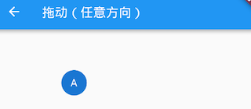

8.2 手势识别
本节先介绍一些Flutter中用于处理手势的GestureDetector和GestureRecognizer，然后再仔细讨论一下手势竞争与冲突问题。
8.2.1 GestureDetector
GestureDetector是一个用于手势识别的功能性组件，我们通过它可以来识别各种手势。GestureDetector 内部封装了 Listener，用以识别语义化的手势，接下来我们详细介绍一下各种手势的识别。
1. 点击、双击、长按
我们通过GestureDetector对Container进行手势识别，触发相应事件后，在Container上显示事件名，为了增大点击区域，将Container设置为200×100，代码如下：
class _GestureTestState extends State<GestureTest> {
String _operation = "No Gesture detected!"; //保存事件名
@override
Widget build(BuildContext context) {
return Center(
child: GestureDetector(
child: Container(
alignment: Alignment.center,
color: Colors.blue,
width: 200.0,
height: 100.0,
child: Text(
_operation,
style: TextStyle(color: Colors.white),
),
),
onTap: () => updateText("Tap"), //点击
onDoubleTap: () => updateText("DoubleTap"), //双击
onLongPress: () => updateText("LongPress"), //长按
),
);
}
void updateText(String text) {
//更新显示的事件名
setState(() {
_operation = text;
});
}
}
运行效果如图8-2所示：

注意： 当同时监听
onTap和onDoubleTap事件时，当用户触发tap事件时，会有200毫秒左右的延时，这是因为当用户点击完之后很可能会再次点击以触发双击事件，所以GestureDetector会等一段时间来确定是否为双击事件。如果用户只监听了onTap（没有监听onDoubleTap）事件时，则没有延时。
2. 拖动、滑动
一次完整的手势过程是指用户手指按下到抬起的整个过程，期间，用户按下手指后可能会移动，也可能不会移动。GestureDetector对于拖动和滑动事件是没有区分的，他们本质上是一样的。GestureDetector会将要监听的组件的原点（左上角）作为本次手势的原点，当用户在监听的组件上按下手指时，手势识别就会开始。下面我们看一个拖动圆形字母A的示例：
class _Drag extends StatefulWidget {
@override
_DragState createState() => _DragState();
}
class _DragState extends State<_Drag> with SingleTickerProviderStateMixin {
double _top = 0.0; //距顶部的偏移
double _left = 0.0;//距左边的偏移
@override
Widget build(BuildContext context) {
return Stack(
children: <Widget>[
Positioned(
top: _top,
left: _left,
child: GestureDetector(
child: CircleAvatar(child: Text("A")),
//手指按下时会触发此回调
onPanDown: (DragDownDetails e) {
//打印手指按下的位置(相对于屏幕)
print("用户手指按下：${e.globalPosition}");
},
//手指滑动时会触发此回调
onPanUpdate: (DragUpdateDetails e) {
//用户手指滑动时，更新偏移，重新构建
setState(() {
_left += e.delta.dx;
_top += e.delta.dy;
});
},
onPanEnd: (DragEndDetails e){
//打印滑动结束时在x、y轴上的速度
print(e.velocity);
},
),
)
],
);
}
}
运行后，就可以在任意方向拖动了，运行效果如图8-3所示：

日志：
I/flutter ( 8513): 用户手指按下：Offset(26.3, 101.8)
I/flutter ( 8513): Velocity(235.5, 125.8)
代码解释：
DragDownDetails.globalPosition：当用户按下时，此属性为用户按下的位置相对于屏幕（而非父组件）原点(左上角)的偏移。DragUpdateDetails.delta：当用户在屏幕上滑动时，会触发多次Update事件，delta指一次Update事件的滑动的偏移量。DragEndDetails.velocity：该属性代表用户抬起手指时的滑动速度(包含x、y两个轴的），示例中并没有处理手指抬起时的速度，常见的效果是根据用户抬起手指时的速度做一个减速动画。
单一方向拖动
在上例中，是可以朝任意方向拖动的，但是在很多场景，我们只需要沿一个方向来拖动，如一个垂直方向的列表，GestureDetector可以只识别特定方向的手势事件，我们将上面的例子改为只能沿垂直方向拖动：
class _DragVertical extends StatefulWidget {
@override
_DragVerticalState createState() => _DragVerticalState();
}
class _DragVerticalState extends State<_DragVertical> {
double _top = 0.0;
@override
Widget build(BuildContext context) {
return Stack(
children: <Widget>[
Positioned(
top: _top,
child: GestureDetector(
child: CircleAvatar(child: Text("A")),
//垂直方向拖动事件
onVerticalDragUpdate: (DragUpdateDetails details) {
setState(() {
_top += details.delta.dy;
});
},
),
)
],
);
}
}
这样就只能在垂直方向拖动了，如果只想在水平方向滑动同理。
3. 缩放
GestureDetector可以监听缩放事件，下面示例演示了一个简单的图片缩放效果：
class _Scale extends StatefulWidget {
const _Scale({Key? key}) : super(key: key);
@override
_ScaleState createState() => _ScaleState();
}
class _ScaleState extends State<_Scale> {
double _width = 200.0; //通过修改图片宽度来达到缩放效果
@override
Widget build(BuildContext context) {
return Center(
child: GestureDetector(
//指定宽度，高度自适应
child: Image.asset("./images/sea.png", width: _width),
onScaleUpdate: (ScaleUpdateDetails details) {
setState(() {
//缩放倍数在0.8到10倍之间
_width=200*details.scale.clamp(.8, 10.0);
});
},
),
);
}
}
运行效果如图8-4所示：

现在在图片上双指张开、收缩就可以放大、缩小图片。本示例比较简单，实际中我们通常还需要一些其他功能，如双击放大或缩小一定倍数、双指张开离开屏幕时执行一个减速放大动画等，读者可以在学习完后面“动画”一章中的内容后自己来尝试实现一下。
8.2.2 GestureRecognizer
GestureDetector内部是使用一个或多个GestureRecognizer来识别各种手势的，而GestureRecognizer的作用就是通过Listener来将原始指针事件转换为语义手势，GestureDetector直接可以接收一个子widget。GestureRecognizer是一个抽象类，一种手势的识别器对应一个GestureRecognizer的子类，Flutter实现了丰富的手势识别器，我们可以直接使用。
示例
假设我们要给一段富文本（RichText）的不同部分分别添加点击事件处理器，但是TextSpan并不是一个widget，这时我们不能用GestureDetector，但TextSpan有一个recognizer属性，它可以接收一个GestureRecognizer。
假设我们需要在点击时给文本变色:
import 'package:flutter/gestures.dart';
class _GestureRecognizer extends StatefulWidget {
const _GestureRecognizer({Key? key}) : super(key: key);
@override
_GestureRecognizerState createState() => _GestureRecognizerState();
}
class _GestureRecognizerState extends State<_GestureRecognizer> {
TapGestureRecognizer _tapGestureRecognizer = TapGestureRecognizer();
bool _toggle = false; //变色开关
@override
void dispose() {
//用到GestureRecognizer的话一定要调用其dispose方法释放资源
_tapGestureRecognizer.dispose();
super.dispose();
}
@override
Widget build(BuildContext context) {
return Center(
child: Text.rich(
TextSpan(
children: [
TextSpan(text: "你好世界"),
TextSpan(
text: "点我变色",
style: TextStyle(
fontSize: 30.0,
color: _toggle ? Colors.blue : Colors.red,
),
recognizer: _tapGestureRecognizer
..onTap = () {
setState(() {
_toggle = !_toggle;
});
},
),
TextSpan(text: "你好世界"),
],
),
),
);
}
}
运行效果如图8-5所示：

注意：使用
GestureRecognizer后一定要调用其dispose()方法来释放资源（主要是取消内部的计时器）。